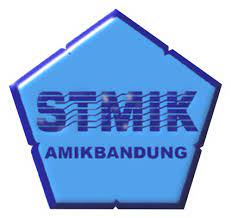

Magister Teknik Informatika Amikom
Program Magister Teknik informatika program pascasarjana stmik amikom yogyakarta diarahkan pada
hasil lulusan yang berbudi luhur, berjiwa entrepreneur dan emmiliki kualifikasi sebagai berikut:
1. Kemampuan merancang dan mengelola proyek-proyek perangkat lunak
2. Kemampuan menguasai aspek teknis an manajemen dari pemanfaatan teknologi informasi
3. Kemampuan mengevaluasi dan menghadapi dampak dari teknologi informasi
4. Kemampuan mempunyai daya inovatif dalam menghasilkan produk/jasa teknologi informasi
5. Kemampuan merancang, mengembagkan, dan mengimplementasikan proyek dalam bidang media digital.
| Tahapan |
Mata Kuliah Reguler |
| Semester 1 |
Analisis dan System Design |
| Design and Networking management |
| Software enginering |
| Information system |
| Database management System |
| Praktikum APlikasi INternet |
| Praktikum Dasar Jaringan KOmputer |